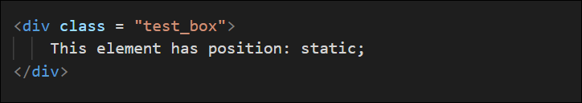
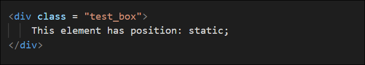

The Position Property
-Sets the positioning method used for an element, this is in regards to the top, bottom, left and right properties we will explore the relative, absolute and fixed property.
Relative postion
Setting the top,right,bottom or left properties will adjust it away from its normal position. Other content will not fit into the gap.
 

Notice the left:30px; that moves the test_box from the leftside 30 pixels.
Fixed postion
The element is removed from normal workflow and will only appear once the position methods are called, the fixed box will stay in the same location on the page no matter how much you scroll.


Notice the right:0px; and bottom:0px; they are almost like coordinates 0 pixles from the right 0 from the bottom. Have a look in the right corner.
Absolute postion
The element is removed from the normal workflow, once the position methods have been incuded, it is positioned relative to the nearest ancestor. If no ancestor or parent is present it moves relative to the body.

The element has a ancestor which contains relative position

So the child will move relative to the parent box, in this case 0 pixels from the bottom as seen below

This element and has position: fixed;